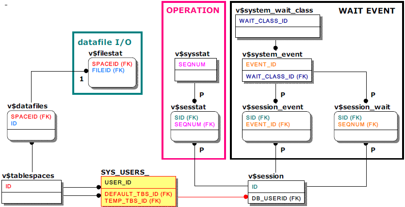

통계정보 관련 주요 성능뷰
성능뷰를 통하여 DBMS 레벨, 세션 레벨, 쿼리 레벨에서의 대기이벤트(wait event)와 연산(operation)에 대한 통계정보, DBMS 레벨의 디스크 테이블스페이스 데이터 파일 I/O, 메모리 사용량 버퍼 풀 통계정보와 같은 다양한 통계정보를 확인할 수 있다.
레벨에 따라 통계정보를 생성하는 기준은 차이가 있다.
- DBMS 레벨의 통계정보
알티베이스 서버 구동 이후부터 정보를 누적하며 알티베이스가 셧다운 되면 초기화된다. 따라서, 특정 기간의 값을 알기 위해서는 (현재의 값 - 측정 시작 시점의 값)을 모든 칼럼 값에 대해 계산해야 한다. - 세션 레벨 통계정보
관련 세션이 접속되어 있는 동안 유지된다. - 쿼리 레벨의 통계정보
세션 별로 가장 마지막에 direct 수행(execution)한 하나의 쿼리와 prepare 된 다수의 쿼리에 한하여서만 유지되며 관련 세션이 종료되면 이 역시 사라지게 된다. 쿼리 레벨의 통계정보는 쿼리섹션에서 이미 언급한 v$statement을 통하여 제공되는 것으로 본 섹션에서는 생략한다.
유의할 사항으로는 통계정보는 TIMED_STATISTICS 프로퍼티가 활성화(1)되어야만 가능하므로 해당 프로퍼티의 활성화 여부를 반드시 확인하여야 한다는 것이다. TIMED_STATISTICS 기본값은 비활성화(0)이다.
TIMED_STATISTICS 프로퍼티는 알티베이스 5 버전부터 제공한다. 이 프로퍼티의 활성화 여부는 아래 문장으로 확인할 수 있다.
SELECT NAME, VALUE1 FROM V$PROPERTY WHERE NAME = 'TIMED_STATISTICS';
통계정보 관련 성능뷰는 대부분 뷰 자체만으로도 모니터링이 가능하므로 조인이 불필요하나 대기이벤트, 연산, 디스크 테이블스페이스의 데이터 파일 I/O에 대한 통계정보의 경우 특정 세션 또는 특정 데이터 파일에 연관을 지어확인할 필요가 있다. 관련 정보를 얻기 위해 조인쿼리 시 참고할 주요 키 컬럼만 표기한 메타테이블 및 성능뷰의 관계는 아래와 같다.

대기이벤트 관련 성능뷰
대기이벤트란 '세션' 또는 '알티베이스 스레드'들의 일련의 대기 작업을 의미한다. 예를 들면, 서비스스레드라는 스레드가 디스크 버퍼에 적재된 페이지에 접근하기 위해 페이지의 래치 획득을 기다리는 작업, 로그 기록을 위해 로그 버퍼의 래치 획득을 기다리는 작업등이 있다.
참고로 알티베이스는 대기이벤트를 그룹화하기 위해 상위 개념인 대기이벤트 클래스(wait event class)를 사용하여 8가지로 분류하고 있다.
- v$system_wait_class
'세션' 또는 '알티베이스 스레드'의 대기이벤트에 대한 통계정보를 '대기이벤트 클래스' 별로 나타낸다. 알티베이스 구동 이후부터 누적되는 통계정보로 종료 시 초기화된다. - v$system_event
'세션' 또는 '알티베이스 스레드'의 대기이벤트에 대한 통계정보를 '대기이벤트' 별로 나타낸다. 알티베이스 구동 이후부터 누적되는 통계정보로 종료 시 초기화된다. - v$session_event
'세션'의 대기이벤트에 대한서만 통계정보를 나타낸다. 세션이 종료되면 관련 통계정보는 사라진다.
- v$session_wait
'세션' 중 조회 시점에 '활성화된 세션'의 대기이벤트에 대해서만 통계정보를 나타낸다. 세션이 유휴상태(idle)가 되거나 종료되면 관련 통계정보는 사라진다.
연산 관련 성능뷰
연산이란 '세션'또는 '알티베이스 스레드'가 수행하는 각종 연산 작업을 의미한다. 예를 들면, 특정 세션의 쿼리 수행, 서비스스레드의 리두로그 쓰기 등이 있다.
- v$sysstat
'세션'또는 '알티베이스 스레드'의 연산에 대한 통계정보를 '연산' 별로 나타낸다. 알티베이스 구동 이후부터 누적되는 통계정보로 종료 시 초기화된다. - v$sesstat
'세션'의 연산에 대해서만 통계정보를 나타낸다. 세션이 종료되면 관련 통계정보는 사라진다.
데이터 파일 I/O
- v$filestat
디스크 테이블스페이스의 데이터 파일별 I/O 통계정보를 나타낸다.
기타 주요 성능뷰
그 외 주요 통계정보를 제공하는 성능뷰는 아래와 같다. 성능뷰 자체가 의미 있는 통계정보를 제공하므로 다른 성능뷰와 조인할 필요가 없다.
- v$memstat
알티베이스가 현재 사용하는 메모리의 사용량을 모듈별로 나타내는 성능뷰로 알티베이스 서버 프로세스의 메모리 사용량이 비정상적일 때 주요 참고 지표가 된다.
모듈의 최고 메모리 사용량을 의미하는 MAX_TOTAL_SIZE 컬럼은 알티베이스 구동 시점부터 유지하는 것으로 알티베이스 셧다운 시 초기화된다.
- v$buffpool_stat
쿼리 수행 시 디스크에서 페이지를 읽지 않고 버퍼 풀의 기존 페이지를 재사용한 비율을 의미하는 'hit ratio'와 같은 버퍼 풀 관련 통계정보를 실시간으로 나타낸다.
- v$lfg
리두로그 파일 관련 성능뷰로 특정 컬럼 하나가 주요 모니터링 대상이다.
LF_PREPARE_WAIT_COUNT컬럼은 현재 리두로그 파일에서 새로운 리두로그 파일로 스위칭하려 할 때, 다음 리두로그 파일이 아직 생성되지 않아 서비스스레드가 기다린 횟수를 나타낸다. 이 값이 크다면 PREPARE_LOG_FILE_COUNT 프로퍼티의 값을 더 큰 값으로 변경 후 적용(알티베이스 서버 재구동)하여 충분한 개수의 리두로그 파일을 미리 만들어지도록 한다.
알티베이스 구동 시점부터 누적 및 합산되는 형태로 알티베이스 셧다운 시 초기화된다.
{kind=link}